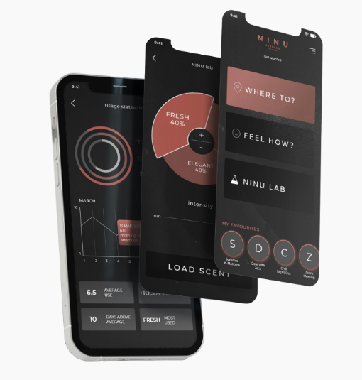

Now your perfume has AI.

Picking a scent used to be as simple as “do I like the smell?” Then the tech world said “hold my spritz bottle.” Meet NINU, what’s billed as the world’s first smart perfume — a little handheld device that holds three different fragrance bases and mixes them together on demand, controlled by an app on your phone. Instead of wandering a department store sniffing tiny paper strips, the app (and its AI enhancements) will tell you what you should smell like based on things like your mood, time of day, and even the weather outside. :contentReference[oaicite:1]{index=1}
Inside the gadget are three complementary scent cartridges. By adjusting how much of each base goes into the mix, you can create what NINU calls “over 100” different fragrances from a single bottle — kind of like having an entire perfume counter in your pocket. The companion app lets you choose presets (office? date night? fresh morning!) or manually blend things yourself if you’ve decided the world still needs *your* signature scent. :contentReference[oaicite:2]{index=2} It even learns from your preferences over time, which means your perfume can theoretically evolve as your life does.
The idea is goofy when you say it out loud — an AI telling you how to smell — but fragrance is weirdly personal anyway. Instead of committing to one bottle forever, NINU gives you a scent “playlist” that changes with your day. It’s a tech twist on an age-old ritual, and honestly, a lot less awkward than asking a stranger which parfum to buy. Whether this becomes the new normal or ends up as a clever novelty remains to be seen, but for now it’s nice to imagine walking into a room smelling like *exactly the vibe* you intended. (Plus, it’s vegan, refillable, and sustainably designed — so you don’t feel bad about smelling good.) :contentReference[oaicite:3]{index=3}